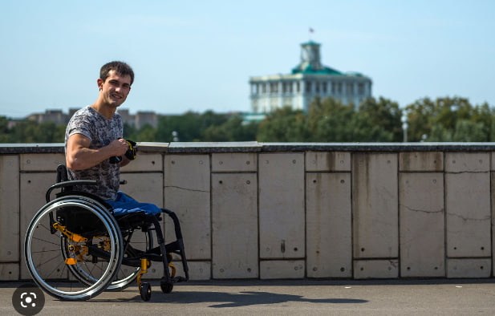

История одной ноги
Посвящяется моему брату близнецу - Синдри
Глава 1
Начало
Всем привет, друзья. Меня зовут Брок и я являюсь правой ногой своего хозяина.
Мы не очень ладим с левой ногой - Синдри, который, по совместительству, является моим братом близнецом.
Мы раньше всё делали вместе:
- Играли в футбол
- Ходили гулять по набережным
- Бегали у бабушки хозяина на даче по грядкам
Иногда он хочет забрать мои лавры, так как завидует тому, что я являюсь ведущей ногой.
На этой почве у нас появляются конфликты и мы спорим и дерёмся по ночам, пока хозяин спит.
Хозяину это всё не нравится, потому что, когда он просыпается мы с братом все в синяках и ссадинах.
Из-за непониманимания ситуации, Хозяин впадает в безумие и много пьёт алкоголь....Ему страшно.
Однажды, он даже сходил к психиатру, что бы узнать, всё ли в порядке с его головой, потому что
совсем не помнит как расшибает нас - свои ноги.
И вот однажды, я решил покончить с мучениями хозяина. Мы шли на работу через стройку и я
увидел ржавый гвоздь, торчащий в доске. Вовремя согнувшись пополам я дал своему брату оступиться
и он со всей силой насадился на этот гвоздь. Он закрчиал и хозяин вместе с ним. Из тела Синдри полилась
тёмно алая кровь. Я ликовал, ведь теперь никто не затмит мои успехи и я буду любимой ногой своего хозяина.
Кстати, вот как мы выглядели с братом когда нам исполнилось 20 лет:

Глава 2
Цена ошибки
После того как я провернул своё дельце, Хозяин попал в больницу и врачи посетовали, что нужно ампутировать
левую ногу. Тянуть было нельзя, т.к. был риск заражения крови. И уже черз пару мнгновений мой брат Синдри
стал культяпкой. В этом момент я был на пьедестали совершенства - я был рад своей находчивости и хитрости
которой никогда небыло у моего брата. Но шло время, и я стал жалеть о своём поступке, ведь мой хозяин
стал инвалидом. Мы больше не играли в футбол, не ходили по зелёной травке в лучах солнца. А всё свободное
время хозяин посвящал моему брату. Он ухаживал за ним, забывая обо мне. Тогда я понял какую глупость я совершил.
Ночью, когда мой брат и хозяин спали, я зашёл на Гугл и стал искать
информацию, как мне помочь своим непутёвым родным. Наткнувшись на странный форум Синиий кит, мне посоветовали
совершить самоубийство. Но я нехотел умирать и решил просто покалечится. Идя на очередную процедуру в больницу
я заприметил тот же самый гвоздь и решил нырнуть на него. Эта была невыносимая боль, правда длилась она недолго.
Всё было как в тумане и через какое то время я очнулся в больнице весь перевязанный. Я не чувствовал себя.
Лишь услышал от врачей, что от меня отрезали половину! Я был в шоке, но понимал, что делал это я из благородных
побуждений, я этого заслуживал. Да и теперь мы живём счастливо с братом. Когда нибудь я расскажу ему правду.
Вот мы с братом лежим счастливые:

Заключение
Теперь мы стали больше проводит время вместе, так как теперь мы никуда не ходим.
Иногда хозяин вывозит нас на каляске в больницу или к родственникам, потому что друзья от хозяина
почему-то отвернулись.
Теперь у меня появилось много времени и я решил написать список дел, которые хочу осуществить:
- Покалечить правую руку Дору
- Покалечить левую руку Джинни
Чтобы они тоже всегда были с нами.
29.01.2023 Синицын Илья - все права не защищены.